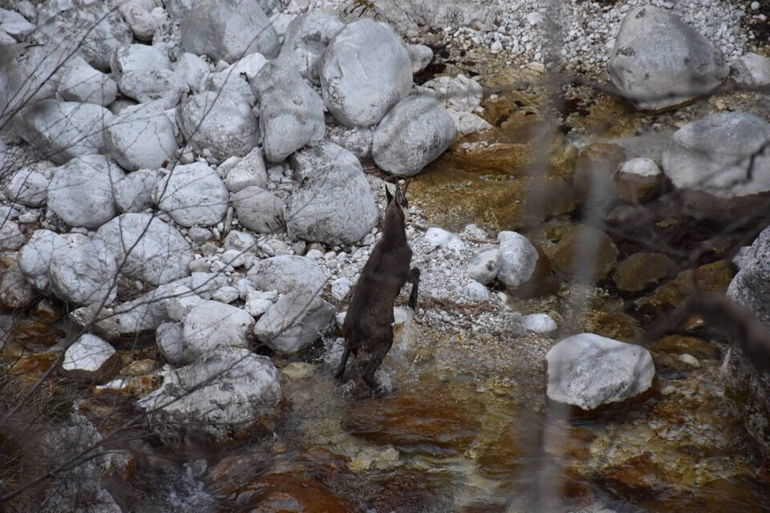

Appena l'ho vista, salendo al Plauris per la Costa Cavallo, ho subito desiderato percorrere la cresta est del monte Lèdis; è facile eh, ma è bello potersi esprimere in montagna secondo le proprie intuizioni e desideri, senza schemi.
Pochissime foto, fatte quasi tutte con il telefono, ah che peccato! Non meriterebbe una pagina sul sito, ma chiudiamo un occhio...
Parto con Lisa da Venzone: il piano è di percorrere in quota tutto il versante nord del monte Lèdis seguendo la mulattiera segnata in nero sulla Tabacco; superiamo il costone su cui sale la traccia che passa per la cjasute des Manzis (vedi Tabacco; ci ero passato un mese prima in discesa, salendo per Venturis: bello!) ed entriamo, seguendo una stupenda quanto inaspettata cengia alberata, nel valloncello del rio Cuel Poscul. Peccato che ad una certa troviamo rami messi come per «chiudere» il sentiero, ed effettivamente nella parte finale la cengia è franata: credo che si passi, ma siccome anche nell'altro versante la situazione sembra poco chiara, cambio di programma: percorriamo la cresta in discesa.
Da tornare perché il sentiero è davvero bello!
Saliamo allora per la mulattiera fra i rii Cuel Poscul e Lec, stranamente molto ben marcata, poi quando si sale per il costone sparisce ogni traccia: il monte Lèdis è così, pieno di tracce, a tratti veri sentieri, ma tutte in generale mal messe.
In cima.
Ecco qua l'inizio della lunga cresta che ci apprestiamo a percorrere.
Qualcosa di panorama si vede.
Poche foto perché è tutta boscosa: comunque bello, quasi nessuna difficoltà, ottimi sentieri di camosci.
I boschi e le valli dimenticate a nord del Cjampón.
La Siroche Gjaline su cui, al momento in cui scrivo, sono già salito due volte.
Ma guarda che bella tracciona!
Stavoli Blandalin.
Chiudiamo l'anello lungo la Venzonassa: e chi pensava di percorrere 17km salendo sul monte Lèdis?
Comunque ad una certa troviamo un camoscio appollaiato a pochi metri dal sentiero, indifferente alla nostra presenza: mai successo un incontro così ravvicinato!
Ecco il camoscio visto prima!
Lassù un tratto di cresta percorsa.